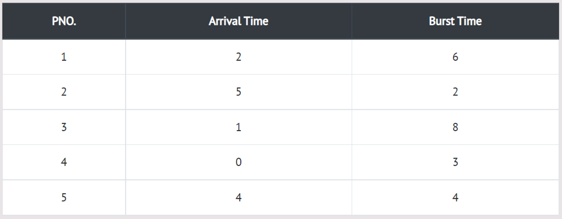

Shortest Job First (SJF) is an algorithm in which the process having the smallest execution time is chosen for the next execution. This scheduling method is non-preemptive - once the CPU cycle is allocated to process, the process holds it till it reaches a waiting state or terminated.
In the following example, there are five jobs named as P1, P2, P3, P4 and P5. Their arrival time and burst time are given in the table below.
Step 0) At time=0, P4 arrives and starts execution.
Step 1) At time=1, Process P3 arrives. But, P4 still needs 2 execution units to complete. It will continue execution.
Step 2) At time=2, process P1 arrives and is added to the waiting queue. P4 will continue execution.
Step 3) At time=3, process P4 will finish its execution. The burst time of P3 and P1 is compared. Process P1 is
executed because its burst time is less compared to P3.
Step 4) At time=4, process P5 arrives and is added to the waiting queue. P1 will continue execution.
Step 5) At time=5, process P2 arrives and is added to the waiting queue. P1 will continue execution.
Step 6) At time=9, process P1 will finish its execution. The burst time of P3, P5, and P2 is compared. Process P2
is executed because its burst time is the lowest.
Step 7) At time=10, P2 is executing and P3 and P5 are in the waiting queue.
Step 8) At time=11, process P2 will finish its execution. The burst time of P3 and P5 is compared. Process P5
is executed because its burst time is lower.
Step 9) At time=15, process P5 will finish its execution.
Step 10) At time=23, process P3 will finish its execution.
Step 11) Let's calculate the average waiting time for above example.
The Turnaround time and the waiting time are calculated by using the following formula.
Turn Around Time = Completion Time - Arrival Time Waiting Time = Turnaround time - Burst Time